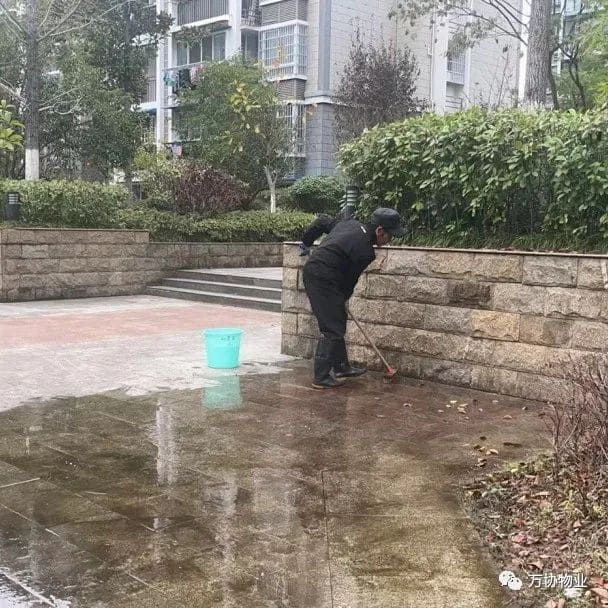
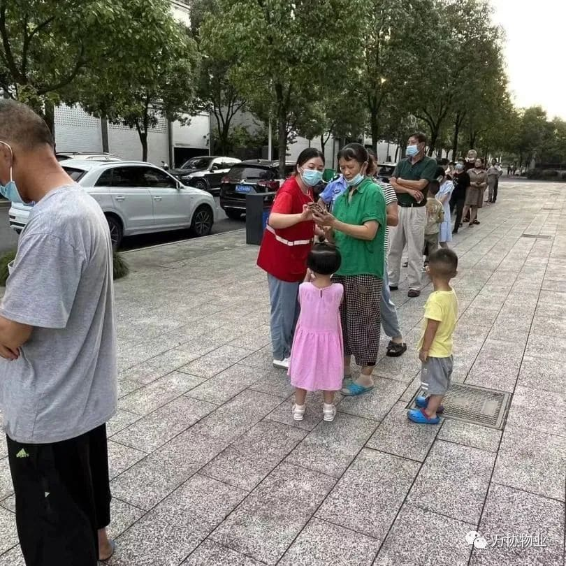
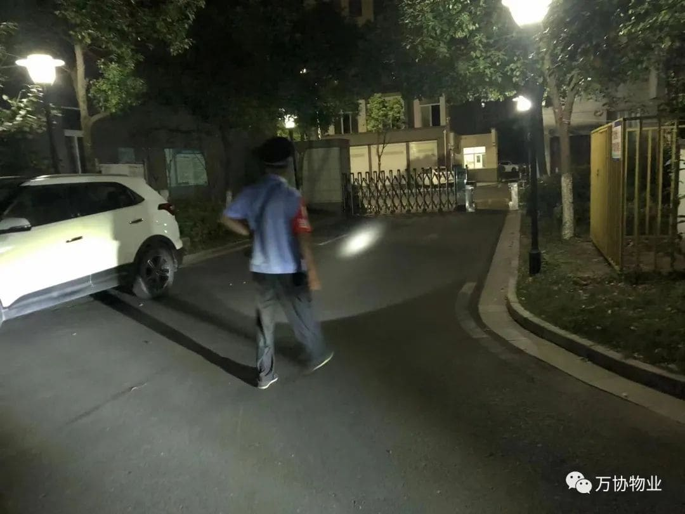
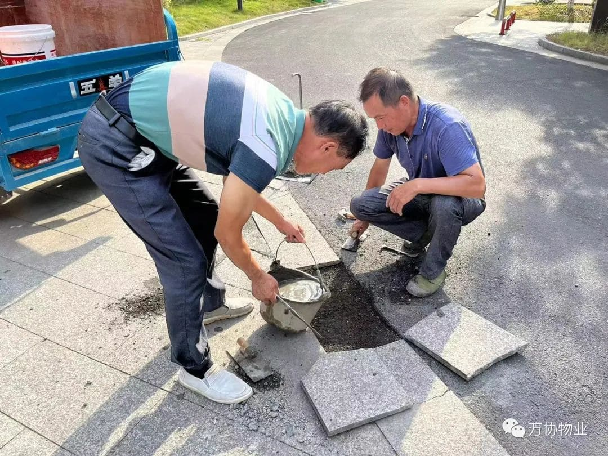

服务简报
REPORT
正月晴和风气新，纷纷已有醉游人。‥‥‥２３年 １月物业服务简报
一冬晴明人不厌，腊月雪飞尤所喜。‥‥‥２２年１２月物业服务简报
迎腊梅花无数开，旋看飞片点青苔。‥‥‥２２年１１月物业服务简报
孟冬十月小阳春，冬景可爱胜春光。‥‥‥２２年１０月物业服务简报
可怜九月初三夜，露似珍珠月似弓。‥‥‥２２年 ９月物业服务简报
天上人间月半中，中秋八月半欣逢。‥‥‥２２年 ８月物业服务简报
七月新秋风露早，渚莲尚拆庭梧老。‥‥‥２２年 ７月物业服务简报
正月晴和风气新，纷纷已有醉游人。‥‥‥２３年 １月物业服务简报
立春乃万物起始、一切更生之义也，意味着新的一个轮回已开启。在新的一年，万协物业公司为了提升物业服务品质，促进业主对物业服务工作的认知度，保障业主的管理活动中的知情权，监督权，自本月起物业将每月的工作总结以公众号的形式公布在业主群里，欢迎各位业主的咨询和监督。现将2023年一月份物业工作展示如下:
一 1月8日，为应对疫情防控新形势新要求，物业党支部积极组建‘暖心服务小分队’开展爱心配送志愿活动，为小区65岁以上老人送上退烧药、酒精和口罩的‘健康服务包’还积极向他们宣传防疫小知识和用药注意事项，本次活动发放80余份‘健康服务包’。
二 新春佳节来临之际，为丰富小区业主文化生活，增添小区节日气氛，1月12日，物业党支部在小区开展‘春联传温暖，持笔送祝福’迎新春写春联活动，把新年祝福送到小区业主手中，本次活动共计送出百余份对联。
三 过年挂灯笼是中国的习俗，红色代表喜庆，园灯笼则寓意着美满团圆，1月20日，物业公司在小区内悬挂起了大红灯笼，把美好的祝福送给每一位业主。
四 物业1月份累计处理事情58起：维修楼道照明28次；处理业主家漏水8次；疏通下水管道堵塞1次；维修更换管道1次；井盖更换3处；处理邻里纠纷3起；帮助处理业主家事情4次；空调滴水3起；申请维修基金2起；处理电梯故障2起；调取监控问题3次；清理天台垃圾多处；清理楼道掉落石灰多次；修剪、清扫枯树枝多次；对空置房及装修业主家巡查多次等。
各部门工作展示
客服部
客服部是物业工作有序开展、联动的中转枢纽，认真处理好每一件琐碎小事，每周的工作例会提取各部门工作汇报，总结上周工作，安排部署本周工作。
送上暖心健康服务包
挂上红红的灯笼 ，迎接新春的到来
春联传温暖，持笔送祝福
为业主排忧解难
春节将至，为了确保园区安全工作有序开展，业主安全得到保障。物业安全分管部门对园区环境、设施设备、消防系统、配电系统、给水系统、等一一检查，并对存在的隐患和不足之处提出整改要求，全力以赴做好安全检查工作。
物业客服部是公司的窗口，是联系业主和物业的沟通桥梁。客服部每日负责接待日常业主的来电、来访、记录报修并第一时间联系工程部；接待业主咨询及投诉处理；做好跟进及回访工作；消防安全宣传工作；更换单元信息栏；协调园区一切大小事宜等工作，并完成安排的各类临时性任务。
工程部
他们奔波于园区各个角落，做着脏、累、繁琐的工作，他们可能在公共区域维修业主的报修，可能在楼道内疏通堵塞的下水管道，也可能在您看不到的地下室，只为确保园区设施设备的正常运转和保障业主日常生活。
秩序部

让我们多一分了解，多一分谅解，您的每一次鼓励和认可都是我们前进的动力，物业服务来源于生活的点滴，每一个岗位都有默默付出的物业人。
保洁部
绿篱草坪清除杂草及落叶，空地补栽、灌木修剪整形
保洁员一个平凡但不可或缺的岗位，为了给业主营造整洁、良好的小区环境，扫地、抹灰、擦拖、清理单元楼梯间的呕吐物，每一样都必不可少。冬日的早晨越发的寒冷，但他们的工作从未间断过。
一冬晴明人不厌，腊月雪飞尤所喜。‥‥‥２２年１２月物业服务简报
转眼间2022年就剩下最后1个月了，时间如流水。一年来，疫情起起伏伏，我们一起走过了2022年，即将迎来2023年。回望2022年，万协物业秉承“业主至上，亲情服务，精益求精，追求品质”的服务宗旨，为小区业主们提供安心服务，得到广大业主们一致认可。万协物业现将12月份工作简报与您呈现，
12月份物业工作如下:清理天台垃圾多次；对空置房及装修业主家巡查多次；维修照明设备29起；疏通下水管堵塞2起；管道维修3起；处理电梯故障3起；处理监控问题4起；单元窨井改造4处；帮助处理业主家事情14次起；单元门维修1起等多种事情，合计71起。
各部门工作展示
客服部
每周一的晨会总结上周工作，安排下周工作。初心从未改变，服务始终如一，我们将一如既往用心服务!

无论大事小事，有事就找物管，物管是与业主最亲近的群体，他们始终秉承着全心全意为业主服务，用心服务业主，成为业主生活无忧号帮手，用温暖贴心的服务免除业主的后顾之忧。贴心服务有保障，维修人员第一时间为业主提供最及时与专业的帮助。
工程部
工程部对 24，25A，25B单元进行下水管改造
工程部对22栋及26-1下水道改造挖开做窨井
工程部和巡逻保安每日对设备设施的维修和维护
保洁部

保洁员一个平凡但不可或缺的岗位，园区里总有他们的身影，他们在业主睡梦中便开始了环境卫生工作，让业主从清晨就拥抱一整天的好心情，营造24小时洁净舒适的健康环境。
迎腊梅花无数开，旋看飞片点青苔。‥‥‥２２年１１月物业服务简报
寻常日子，亦有暖心陪伴。平淡生活，也可遇见幸福的模样。每一年、每一月、每一天、您的声音，必有回应。无论季节变化，万协物业始终如一，于细微处显精神，于小事中下功夫，于平凡中透真情。万协物业11月份工作简报与您如约而至。
11月份万协物业工作如下：累计处理事件71次；公共照明维修31次；帮忙处理业主家事情5起；邻里纠纷7起；电梯故障4起；飞线充电多起；疏通下水管道6起；充电桩故障2起；帮助业主查监控2起；修剪、清扫枯枝枯叶多次，对空置房及装修业主家巡查多次等其他工作。
各部门工作展示

11月7日晚7点-9点，萝宁社区书记，水桥业委会5位代表，万协物业工作人员在物业办公室2楼 共同商议前物业安徽振升保安服务集团有限公司黄山分公司超收永琪水桥人家物业费事宜及万协物业汇报自公司3月份入住小区至11月份工作总结、2022年年底工作安排及2023年物业全年工作计划。
孟冬十月小阳春，冬景可爱胜春光。‥‥‥２２年１０月物业服务简报
金秋送喜，万物皆丰。在绚烂的秋意中，万协物业用贴心的服务兑现精致生活的初心，与您相逢每一寸时光，同行每一段路程。2022年10月份万协物业服务中心的主要工作:海阳镇萝宁社区党建指导员送学上门，指导企业注册邻工集市就业平台；国庆节，物业全体员工一如既往地坚守在岗，扎实开展各项工作，在小区派发小红旗，用实际行动表达对祖国生日的祝福；重阳节当日，物业党支部开展了为老服务志愿活动，约请专业理发师志愿者走进小区为高龄老人免费理发；喜迎二十大召开，物业党支部组织公司入党积极分子及优秀员工观看习近平总书记代表第十九届中央委员会做报告；为配合创建全国文明城市的要求，万协物业公司全体员工积极参与创城工作，清除楼道,消防通道及地下室堆放多年的私人物品，泡沫箱及纸壳等易燃物品，清理绿化带垃圾枯枝等；南区更换了20个新的垃圾桶。
10月份万协物业工作如下：累计处理事件72次；楼道及路灯维修20 次；帮忙处理业主家事情12 起；邻里纠纷6 起；电梯故障 5起；帮业主查监控4起；飞线充电5起；车辆乱停9起；疏通下水管堵塞1起；充电桩故障1起；马蜂窝处理3起；修剪枯枝绿化多次等其他工作。
物业党支部喜迎二十大召开
国庆节，我与祖国同声
各部门工作日常
秋渐末，冬初始， 繁霜结寒翠，请君添暖衣. 万协物业祝您幸福安康
可怜九月初三夜，露似珍珠月似弓。‥‥‥２２年 ９月物业服务简报
金秋九月，万物恰逢其时，充满收获的盈然与欣喜，季节更迭，初衷不变。如果说家是承载生活的空间，那么物业服务便是赋予生活的点滴感动。生活之美，起于本心，落于微末；幸福生活，因为懂得，所以贴心。万协物业现将9月份物业服务工作为您呈现，欢迎您进行监督、指正、并提出您宝贵的意见和建议。
9月份万协工作如下:为业主累计处理事情60余次；楼道及路灯维修21次；帮忙处理业主家厨房卫生间渗水等7起；疏通下水管道堵塞2起；邻里纠纷处理10起；车辆乱停放事件3起；电梯故障2起；飞线偷电1起；充电桩维修3起；路面多处维修及绿化修剪维护等工作。
活动记录 中秋月
为弘扬中国传统文化,欢庆传统 佳节，拉近社区，物业公司与居民之间的距离，进一步增进邻里感情，让居民感受到团结、友爱、和谐社区的氛围，9月9日下午，万协物业党支部联合萝宁社区举办了以'巧手做月饼，欢乐过中秋’为主题的小区中秋团圆会，为辖区居民送上中秋祝福。
活动中，万协物业党支部入党积极分子吴琴和程秀兰发挥烘焙特长，介绍各种配料的名称，然后再示范月饼的制作方法，居民们纷纷参与起来，撒面粉、擀饼皮、包馅料、现场欢声笑语其乐融融。第一批月饼烤制出来后，大家又围坐在一起品尝亲手制作的月饼，听社区网格党支部老党员孙云讲述党史里的中秋故事。活动结束后，社区网格老党员和物业工作人员又一同把月饼送到了小区内的独居老人和老党员家中，预祝他们度过一个平安欢乐的中秋佳节。
此次活动，通过党建引领服务社区居民，不仅让居民们体验了亲手制作月饼的乐趣，体验了不一样的中秋氛围，更重要的是在制作过程中，大家携手合作，欢聚一堂，凝聚起浓浓的邻里情谊。
工作记录
各部门工作展示
客服部
客服中心工作人员热情接待业主，耐心解答业主疑问；对各类资料进行收集、存档；做好每日与业主沟通工作；积极处理住户保修、咨询、投诉，前台24小时电话服务等。结合工程部解决维修遗留问题；日常巡逻，对未办和已办装修手续房屋进行巡查签到等工作;客服部工作人员多次参加小区疫情核酸检测志愿者活动。
工程部
维修养护，他们是一把能手，拿起工具包，就开始了一天的工作。他们总是出现在需要维修的地方，工作尽职尽责，默默在自己的岗位上工作着，只为看到业主满意的微笑，这就是他们工作的最大动力。
秩序部
保安员严格把控小区出入人员及车辆，做好安全防范。巡逻岗每日巡查，夜间加强重点区域巡查工作等。
保洁部

伴着美丽的朝阳，她们拿起扫把、抹布，推起了垃圾桶；小区的环境在她们手里整洁了起来。她们是扫去落叶尘埃的小区保洁员，在小区里、单元楼前、地下车库中默默工作。她们用自己的努力，在平凡的岗位上做着不平凡的贡献。
天上人间月半中，中秋八月半欣逢。‥‥‥２２年 ８月物业服务简报
为构建和谐小区，营造一个优美、安全、舒适、文明的小区环境，不断提升我们的物业服务水平，更好的搭建与业主沟通的平台。物业服务中心特此将8月份物业服务工作简报呈现于您，以便您了解、监督物业服务工作和提出宝贵的意见和建议。
八月份万协工作如下：为业主累计处理事情78余次；楼道及路灯维修30次；为业主家处理事情15起；处理邻里纠纷10起；充电桩不通电处理2起；电梯故障3起；申请维修基金1起；车辆乱停放7起；疏通下水管道堵塞2起；路面多处维修及绿化修剪维护等工作。
活动记录
一、8月12日社区汇同物业在小区北广场举办喜迎二十大，讴歌新时代摄影展活动。
二、8月16日根据上级部门对小区申请皖美红色物业的要求，对小区进行摸底排查进行整改，并且将小区亮点汇总形成资料报上级并请相关主管部门到小区进行指导与检查。
三、8月13日物业对27栋2个单元共4处积压多年业主利用雨水管排污造成污水横流，臭气熏天的事件进行了整改。
各部门工作展示
客服部
每日客服部负责接待日常业主来电、来访，及时记录报修并第一时间联系工程师傅去维修,接待客户咨询及投诉处理，并做好跟进及回访，完成安排的各类临时性任务等工作。8月物业工作人员对小区进行了飞线充电排查，消除安全隐患。
工程部
哪里有故障，哪里有困难，哪里就有他们的双手。在我们看到的地方，物业维修师傅们都在换水管换灯,巡查各种设备设施等，这些只占他们一部分；而在我们看不到的地方，隐藏着忙碌、繁琐的工作，在地下室不起眼的地方在你难以抵达的楼顶天台之上。
秩序部
连日的高温，人们走在路上，也会感到一股股的热浪，但物业的秩序队员始终坚守岗位，守护园区秩序，每天对进出园区车辆、人员细心询问、核实、记录，每日夜间安全巡查等工作。
保洁部

8月连续高温酷暑，保洁员每日穿梭在园区内的每个角落，对所有区域进行全方位的清扫，他们任劳任怨，不辞辛苦。
七月新秋风露早，渚莲尚拆庭梧老。‥‥‥２２年 ７月物业服务简报
为构建和谐小区，营造一个优美、安全、舒适、文明的小区环境。万协物业希望不断提升我们的物业服务水平，更好地搭建与业主沟通的平台。特此将7月份物业服务工作简报呈现于我们尊贵的业主，以便您了解、监督物业服务。
七月份万协工作如下：为业主累计处理事情60余次；楼道及路灯维修23次；为业主家处理漏水7起；处理邻里纠纷9起；公共电路维修6次；充电桩不通电处理3起；电梯故障5起；井盖更换5处；申请维修基金1起；绿化修剪维护等工作。
各部门工作展示
客服部
客服部是我们物业与业主间联系的桥梁。万协客服人员积极主动，工作热心，态度可亲，为业主的问题提供最优质的沟通协调。
每一位业主提出的问题，我们客服人员都会认真记录与反馈。每一项业主需解决的事项，我们客服人员都会根据流程追踪确认，保障小区内所有问题得到妥善解决。
物业业主一家亲，万协客服人员认真为业主协调纠纷，解决问题，为我们服务的小区打造和谐友爱的住居环境。
工程部

工程部的维修师傅们兢兢业业，保障小区的各项设施设备完好无损，日常公共区域设备检修、维保等工作。
在本月中，万协维修师傅们负责给业主小区修理了楼道电灯及路灯，同时为我们安装了充电桩的业主进行了维修，还进行了公共电路维修与电梯故障处理，排查了小区用电安全隐患。维修师傅们还重点为小区更换了破损的井盖，并为业主家处理了多起家庭漏水问题。
万协工程维修人员时刻待命，为我们的业主们提供最专业的水电使用服务。保障业主们日常生活的便利是我们最大的使命。
秩序部

物业秩序员是一个平凡却又肩负着重任的岗位。他们担负着整个小区的安防工作，同时还要维护小区日常秩序，禁止各种违规操作，保障小区安全稳定。同时他们维护小区环境，还"兼职"着保洁的工作，维护小区环境。小区发生紧急事务时，也是秩序员身先处理，顶在最前端为业主保驾护航。
万协的秩序员勤勤恳恳坚守岗位，将外部风险杜绝在小区之外，同时维护好小区内部规则如车的停放，排查消防隐患，维护装修秩序等工作，踏实笃行，潜心服务。
保洁部
保洁部每天为小区迎接第一缕晨曦。日复一日，兢兢业业，冒着三伏天酷暑，无论风雨，始终战斗在环境卫生工作第一线。
保洁员工每天和污物打交道，看上去就是扫扫地修修绿化，平平淡淡。但她们用个人的辛勤换来了小区的干净卫生，为我们万协的业主们保障了整洁优美，让人心情舒畅美好环境。作为万协保洁人，用我们的劳动，与业主们共同维护好我们美好的家园，小区环境的美丽就是我们最大的自豪。